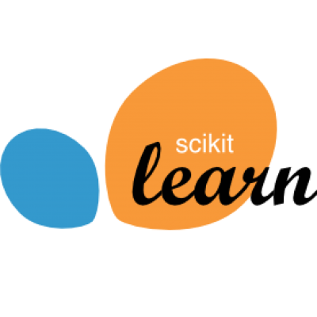
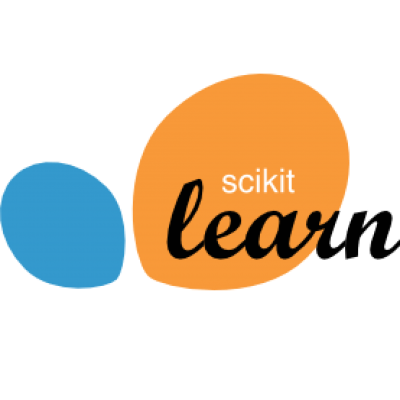

Part-time Lecturer / Teaching Assistant ( Computer Science Department, Rutgers University )
I work under Prof. Trees and Prof. Belowich to teach the undergraduate course CS110: Introduction to Computers and their Applications, which includes web design with HTML, CSS, JavaScript; Excel, Scratch and Google Suite. My duties also include conducting and grading quizzes, exams, assignments.